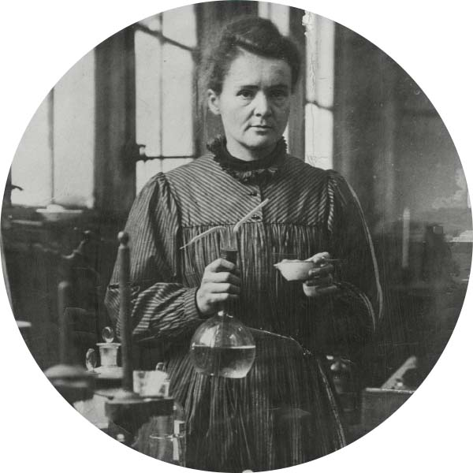

Marie Curie
Marie Curie (1867–1934) highlights her pioneering career. She remains the only person to win Nobel Prizes in two distinct scientific fields (Physics in 1903, Chemistry in 1911)

About
Welcome to the portfolio of <>Marie Skłodowska Curie (7 November 1867 – 4 July 1934). She was the first woman to win a Nobel Prize, the only person to win Nobel Prizes in two different sciences, and remains one of the most influential scientists in history.
Video about Marie Curie
Marie Curie:A Pioneer in Science
Works
Marie Curie's scientific contributions span decades of dedicated research. Below are her major works:
Key Discoveries Contributions
- Discovery of Polonium (1898) – Named after her homeland, Poland.
- Discovery of Radium (1898) – Co-discovered with Pierre Curie.
- Theory of Radioactivity – She coined the term "radioactivity."
- First Nobel Prize in Physics (1903) – Shared with Pierre Curie and Henri Becquerel.
- Second Nobel Prize in Chemistry (1911) – For isolation of pure radium.
- Mobile X-ray units in WWI (1914–1918) – Developed "petites Curies" to aid wounded soldiers.
Published Works
| Year | Title | Field | Notes |
|---|---|---|---|
| 1898 | Sur une nouvelle substance fortement radio-active | Physics / Chemistry | Announces discovery of radium |
| 1903 | Recherches sur les substances radioactives (PhD Thesis) | Physics | First woman to earn a physics PhD in France |
| 1910 | Traité de Radioactivité | Physics | Comprehensive textbook on radioactivity |
| 1923 | Pierre Curie (biography) | Biography | Written in memory of her husband |
Resume
Education
| Degree | Institution | Year |
|---|---|---|
| Licence in Physics | University of Paris (Sorbonne) | 1893 |
| Licence in Mathematics | University of Paris (Sorbonne) | 1894 |
| Doctor of Physical Science (PhD) | University of Paris (Sorbonne) | 1903 |
Awards and Prizes
- Nobel Prize in Physics – 1903
- Nobel Prize in Chemistry – 1911
- Davy Medal – 1903
- Matteucci Medal – 1904
- Elliott Cresson Medal – 1909
- Albert Medal – 1910
- Willard Gibbs Award – 1921
Skills
- Experimental Physics Chemistry
- Radioactivity Research
- Spectroscopy
- Scientific Writing Publication
- Laboratory Management
- Medical X-ray Technology
- Languages: Polish, French, Russian, German, English
Contact
Fill out the form below to get in touch